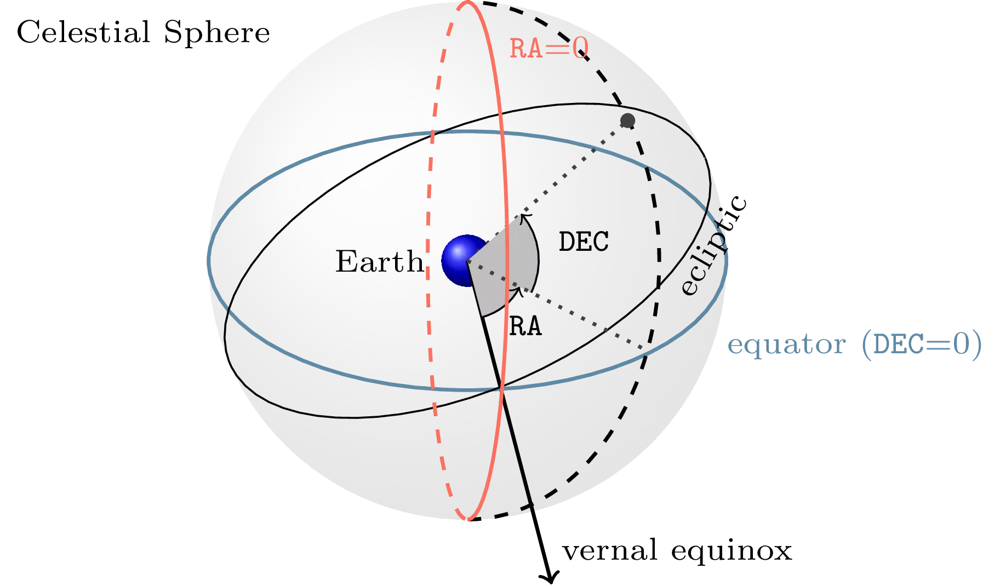
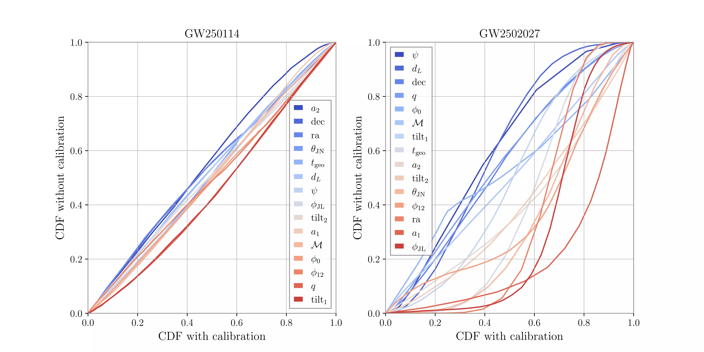
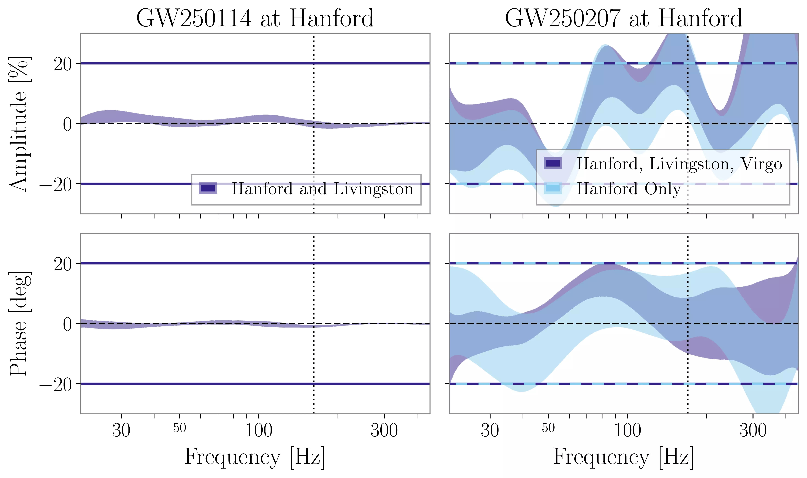

In this chapter, we outline the necessary ingredients for a full description of the response of a gravitational wave detector to a compact binary coalescence signal, including the parameters describing the geometry of their relative position (Section 6.1), the way the signal can be quickly computed in the frequency domain (Section 6.2), the antenna patterns of ground- and Moon-based detectors (Section 6.4), and the calibration of ground-based detectors (Section 6.3).
6.1 Extrinsic parameters
6.1.1 Phase and inclination angle
As we introduced in Section 5.2, the reference orbital phase of the signal \(\phi_{0}\) and the inclination angle \(\iota\) define the position of the observer relative to the orbital plane. In order to better understand their effect, the rest of this section will describe them in relation to the way a waveform is decomposed in spherical harmonics.
Spherical harmonic decomposition
The two time-domain polarizations of a gravitational wave, \(h_+\) and \(h_\times\), can be decomposed into spin-weighted spherical harmonics as \[
h_+ (t) - i h_\times (t) = \frac{1}{d_L} \sum _{l=2}^{\infty } \sum
_{m=-\ell}^{\ell} h_{\ell m} (t; \theta_{\text{int}})\, {}^{(-2)}Y_{\ell m} (\iota, \phi_0)\,.
\tag{6.1}\]
This decomposition is performed around the orbital angular momentum, which is not conserved in the generic, spin-precessing case. If the binary is spin-aligned, on the other hand, it is also symmetric about the orbital plane, which leads to the relation \(h_{\ell m}= (-1)^{\ell}h^{*}_{\ell -m}\)(Pratten et al. 2021). For the expressions of the spin-weighted harmonics, see Note 6.1.
To a good approximation, the time-domain phase of each harmonic component satisfies \[
\phi_{\ell m} (t) \approx \frac{m}{2} \phi_{22}(t)\,,
\] which can also be written in the frequency domain as (García-Quirós et al. 2020)\[
\phi_{\ell m} (f) \approx \frac{m}{2} \phi_{22}\left( \frac{2f}{m} \right)\,.
\]
Note 6.1: Spin-weighted spherical harmonics
The spin-weighted spherical harmonics are functions of the orientation of the source, parametrized as \(\iota\) (inclination angle, between the observation direction and the source angular momentum) and \(\phi_0\) (initial phase of the source’s rotation).
where \(d^\ell_{m, s} (\iota )\) is called a Wigner \(d\)-function, given by \[
\begin{aligned}
d^\ell_{m, s} (\iota ) = \sum _{k=k_1 }^{k_2 }
& \bigg[ \frac{(-1)^k \sqrt{(\ell+m)! (\ell-m)! (\ell+s)! (\ell-s)!}}{(\ell+m-k)! (\ell-s-k)! k! (k+s-m)!} \\
&\left(\cos (\iota / 2)\right)^{2 \ell + m -s - 2k}
\left(\sin (\iota / 2)\right)^{2 k + s - m} \bigg]\,,
\end{aligned}
\tag{6.2}\]
where \(k_1 = \max(0, m-s)\) and \(k_2 = \min (\ell + m, \ell - s)\).
Note that in the gravitational wave case the label for the harmonics \(Y\) is \(-2\), but the parameter \(s\) in the \(d\)-function is equal to \(+2\).
Now, we can make use of the fact that, thanks to symmetry under reflection across the orbital plane, we have \(H_{\ell m} = (-1)^\ell H_{\ell -m}^*\), which in this case reduces to \(H_{22} = H_{2-2}^*\) (see section II.D in Ossokine et al. (2020)). Therefore, if we define \(\widetilde{H}_{22} = H_{22} e^{2i \phi_0 }\), we will have
where \(\Re\) and \(\Im\) denote the real and imaginary parts.
At this point, we can identify the real and imaginary components, as well as expressing \(\widetilde{H}_{22} = H_{22} e^{2 i \phi_0 } = A_{22}(t) e^{i \phi_{22}(t) + 2i \phi_0 }\):
This is the same expression we get in the quadrupole, Newtonian approximation — see, for example, equations 4.3 in Maggiore (2007), as long as we reabsorb the coefficients into the amplitude.
Inferring phase
The reference phase from a compact binary merger is a crucial parameter for its description, which however brings little physical insight (Veitch & Del Pozzo 2013). This has led to efforts to simplify its treatment. If the signal only includes the \(\ell |m| = 22\) harmonic, it is possible to derive a formulation of the likelihood which is analytically marginalized over phase, see Section 3.5.1.
Phase is also difficult to infer when using neural posterior estimation (Section 2.3.2): the network tends to be unable to infer it, and returns the prior instead, despite correctly constraining the remaining parameters. To this end, Dax et al. (2023) introduced a resampling method, in which the phase is synthetically sampled by evaluating the likelihood on a grid in phase.
Twisting: the construction of spin-precessing frequency-domain waveforms
The construction of spin-precessing gravitational waveforms is generally performed by computing them in a non-inertial, precessing frame aligned with the orbital angular momentum \(\vec{L}\), and then converting to the approximately inertial frame aligned with the total angular momentum \(\vec{J}\) by means of a time-dependent rotation (Pratten et al. 2021, eq. 3.3): \[
h_{\ell m}^{J} = \sum _{m'=-\ell}^{\ell} \mathcal{D}_{m'm}^{\ell *}(\alpha, \beta, \gamma) h_{\ell m'}^{L}\,.
\] This choice is not unique, and the \(\vec{J}\) vector is not exactly conserved for an inspiralling, spin-precessing system (Boyle, Owen & Pfeiffer 2011); we can use its value at a given moment (such as \(t \to - \infty\)) as a reference.
This is useful because the gravitational waves in the precessing frame are quite close to those which would be emitted by a non-precessing binary.
The \(\mathcal{D}_{m'm}^{\ell}\) are the Wigner D-matrices \[
\mathcal{D}_{m'm}^{\ell}(\alpha, \beta, \gamma)
= e^{i m' \alpha} e^{im\gamma}\mathcal{d}_{m'm}^{\ell}(\beta)\,,
\] where the \(\mathcal{d}_{m'm}^{\ell}\) are the Wigner \(d\)-function, defined in Equation 6.2. The three Euler angles \(\alpha\), \(\beta\) and \(\gamma\) are time-dependent. They allow for more freedom than necessary: the rotation mapping \(\vec{L}\) to \(\vec{J}\) is not unique. Once the angles \(\alpha\) and \(\beta\) are determined to track the correct rotation, \(\gamma\) can be gauge-fixed such that \[
\dot{\gamma} = - \dot{\alpha} \cos \beta\,,
\] which enforces a lack of rotation in the precessing frame about \(\vec{L}\)(Boyle, Owen & Pfeiffer 2011).
After some computation, one gets the following expression for the positive-frequency waveforms in the inertial frame: \[
\begin{aligned}
\tilde{h}^{J}_{+}(f) = \frac{1}{2} \sum_{\ell\geq {2}} \sum_{m' = 0}^{\ell} \tilde{h}^{L}_{\ell -m'}(f) e^{i m' \gamma} \sum_{m = -\ell}^{\ell} \left[ A^{\ell}_{m-m'} + (-1)^{\ell}A^{\ell*}_{mm'} \right] \\
\tilde{h}^{J}_{\times}(f) = \frac{i}{2} \sum_{\ell\geq {2}} \sum_{m' = 0}^{\ell} \tilde{h}^{L}_{\ell -m'}(f) e^{i m' \gamma} \sum_{m = -\ell}^{\ell} \left[ A^{\ell}_{m-m'} - (-1)^{\ell}A^{\ell*}_{mm'} \right]\,,
\end{aligned}
\tag{6.3}\] written in terms of the mode-by-mode transfer functions \[
A^{\ell}_{mm'} = e^{-im \alpha} d^{\ell}_{mm'}(\beta) ^{(-2)}Y_{\ell m}\,.
\]
At a first approximation, the \(L\)-frame modes can be approximated with a non-spin-precessing model, but this is not completely accurate.
The angles defining the transformation need to be computed in the frequency domain as well, at a frequency \(2 \pi f / m'\). Post-Newtonian expressions for them can be used, such as those given in appendix G.1 of Pratten et al. (2021).
Note 6.4: Fourier transforming a complex signal
Starting from equation Equation 6.1, we want to obtain frequency-domain expressions for both the plus and cross polarizations, which are real-valued. They can be extracted by taking the real and imaginary part, and then Fourier transforming: \[
\begin{aligned}
h_{+}(f) &= \frac{1}{2} \left[ \tilde{h}(f) + \tilde{h}^{*}(-f) \right] \\
h_{\times}(f) &= \frac{i}{2} \left[ \tilde{h}(f) - \tilde{h}^{*}(-f) \right] \,.
\end{aligned}
\]
Within General Relativity, the strain from a gravitational wave moving along a fixed direction only has two independent polarizations. Alternative theories of gravity allow for the excitation of up to six (Nishizawa et al. 2009), but we will focus on the GR case, where the strain tensor is decomposed as \[
h_{ij}(t) = h_+ (t) e_{ij}^{+} + h_\times (t) e_{ij}^{\times}
\tag{6.4}\] as a function of the two orthogonal unit basis tensors \[
e_{ij}^{+} = u_{i}u_{j} - v_{i}v_{j}
\qquad \text{and}
\qquad
e_{ij}^{\times} = u_{i}v_{j} + v_{i}u_{j}\,.
\]
Three angles in total are required to define these two vectors. These are the sky position of the source, \(m\), which is orthogonal to both \(u\) and \(v\), and a polarization angle\(\psi\) which parameterizes rotations along the \(m\) axis.
The explicit expressions for these three vectors are as follows (Nishizawa et al. 2009): \[
\begin{aligned}
m &= \begin{pmatrix}
\sin \theta \cos \phi \\
\sin \theta \sin \phi \\
\cos \theta
\end{pmatrix} \\
u &= \begin{pmatrix}
-\sin \phi \\
\cos \phi \\
0
\end{pmatrix} \cos \psi
- \begin{pmatrix}
\cos\theta \cos \phi \\
\cos\theta \sin \phi \\
-\sin\theta
\end{pmatrix}\sin \psi \\
v &=
\begin{pmatrix}
-\sin \phi \\
\cos \phi \\
0
\end{pmatrix} \sin \psi
+ \begin{pmatrix}
\cos\theta \cos \phi \\
\cos\theta \sin \phi \\
-\sin\theta
\end{pmatrix}\cos \psi \,,
\end{aligned}
\] where the sky position is parameterized by an azimuth \(\phi \in [0, 2 \pi)\) and a colatitude \(\theta \in (0, \pi)\), which is equal to \(\pi / 2\) on the equator. Figure 6.1 illustrates the meaning of right ascension \(\text{ra} = \phi\) and declination \(\text{dec} = \pi / 2 - \theta\), a standard parameterization for positions in the sky. Declination is analogous to latitude, and it is equal to \(0\) on the equator.

Figure 6.1: Diagram of the right ascension and declination coordinates, from Dupletsa et al. (2025).
When constraining the sky position of a given gravitational wave source, we typically do not actually care about the error in the coordinates themselves but about the sky localization area, the minimal solid angle that can be chosen such that the probability that the signal lies within it is \(X\), where \(X\) is some conventionally chosen number such as \(90\%\); see Section 2.4.1.2 and Section 2.1.1.1 for more details.
Priors
Right ascension and declination are generally taken to have agnostic, uniform prior distributions in the sky, as gravitational waves originate from isotropically distributed extragalactic sources. In order to achieve this, the priors on \(\mathtt{dec} \in [-\pi / 2, \pi / 2]\) and \(\mathtt{ra} \in [0, 2 \pi]\) are (Dupletsa et al. 2025, Romero-Shaw et al. 2020): \[
\pi(\mathtt{dec}) = \frac{1}{2} \cos(\mathtt{dec})
\qquad
\text{and}
\qquad
\pi(\mathtt{ra}) = \frac{1}{2 \pi} \,.
\]
While the polarization angle \(\psi\) could in principle take any value in \([0, 2\pi]\), this is redundant: as gravitational radiation has spin 2, its period for rotations around the propagation axis is \(\pi\). Therefore, it is customary to only consider \(\psi \in [0, \pi]\) with \(\pi(\psi) = 1/\pi\).
6.1.3 Distance and redshift
In flat spacetime, gravitational wave amplitudes decay proportionally to \(1/d\), where \(d\) is the distance to the source.
Like electromagnetic signals, however, binaries at cosmological distances are expected to be affected by cosmological redshift. This affects their propagation, modifying their frequencies. We generally work under the assumption that, on large enough scales, the Universe is described by a Friedmann-Lemaître-Robertson-Walker (FLRW) cosmological model, whose metric in spherical coordinates is \[
\text{d}s^{2} = -c^{2}\text{d}t^{2} + a^{2}(t)
\left[ \frac{\text{d}r^{2}}{1-kr^{2}} + r^{2}\text{d}\theta^{2} + r^{2} \sin ^{2}\theta \text{d}\phi^{2} \right] \,.
\] The curvature parameter \(k\) can take on the values \(k=-1\) (open Universe), \(k=0\) (flat universe), \(k=+1\) (closed Universe). The parameter \(a(t)\) is the scale factor.
The following prescriptions are required to consider cosmological effects in the analysis of a signal (Maggiore 2007).
The Euclidean notion of distance \(d\) should be replaced by luminosity distance\(d_{L}\). This is defined by the requirement that radiation flux from any source, as measured in the observer’s frame, should decay proportionally to \(1 / d_{L}^{2}\); in FLRW cosmology it can be computed as \[
d_{L}(z) = c(1+z) \int_{0}^{z} \frac{\text{d}z'}{H(z')}\,,
\] where \(H(z) = \dot{a} / a\) is the Hubble parameter.
Furthermore, all frequencies are shifted down by a factor \(1+z\). For compact binary coalescences, this can be simply accounted for by changing the reference scale of the system, which is encoded in the masses: the signals we measure are then parameterized in terms of detector-frame masses \(M_d\), which are related to those in the source frame, \(M_{s}\), by \[
M_{d} = (1+z) M_{s}\,.
\] For signals emitted by black holes, this is the only measurable combination through gravitational waves: changing \(z\) and \(M_{s}\) in a way that leaves \(M_{d}\) unchanged gives rise to exactly identical signals.
Gravitational wave cosmology
A significant issue in modern cosmology is the precise determination of the expansion rate of the Universe as a function of time, or equivalently the Hubble rate \(H(z)\) as a function of redshift \(z\).
Measurements of distance associated with redshift in the form \((d_{L}, z)_{i}\) would be sufficient to uniquely determine it. However, the observation of gravitational waves from a black hole binary only provides estimates of \((d_{L}, (1+z)\mathcal{M})\). Much of the field of gravitational wave cosmology is devoted to the disentanglement of these contributions. There are several proposed methods for this (Abac et al. 2026), some of which have already provided constraints on the local Hubble rate \(H_0\).
Source galaxy association, i.e. bright sirens: if the sky position of the source is measured well enough that an electromagnetic counterpart is detected and associated with a galaxy, we can use standard spectroscopic methods to determine the redshift \(z\) of that galaxy and associate it to the source. This was done for GW170817 (Abbott et al. 2017), the only gravitational wave source with an electromagnetic counterpart to date.
Spectral methods based on the mass distribution, i.e. dark sirens: even if we do not know the mass of any specific source, we can model the mass distribution of the population to extract information on it.
Methods based on matter effects, i.e. Love sirens: if the tidal polarizability parameter \(\Lambda\) of a neutron star (see Section 5.4) is measured, it can be used to infer a mass scale independently from the overall amplitude and phase of the signal.
Priors
In an Euclidean Universe, the requirement of the distance prior being volumetrically uniform would correspond to \(\pi(d) \propto d^2\).
In an expanding Universe, the equivalent requirement is for the prior to be uniform in comoving volume as well as source frame time; this leads to (Romero-Shaw et al. 2020): \[
\pi(d_{L}) = \frac{1}{1+z} \frac{\text{d}V_{c}}{\text{d}z} \frac{\text{d}z}{\text{d}d_{L}}\,.
\tag{6.5}\]
Figure 6.2: Cosmological priors for luminosity distance. The labels in the legend denote the quantity each prior is uniform over. All priors have been normalized so that they integrate to 1 over the range shown.
In Figure 6.2 we visually compare some options for cosmological distance priors:
the Euclidean “luminosity volume” prior \(\pi(d_L) \propto d_L^2\);
the “comoving frame volume” prior, uniform in \(\text{d}V_c / \text{d}d_L\);
the “source frame volume” prior, given in Equation 6.5; this is the distribution which we would expect binary mergers to follow in the Universe if the merger rate were constant as a function of time.
6.1.4 Timing
The timing parameter \(t_{0}\) has a straightforward physical meaning, encoding our uncertainty on the precise moment a given signal has arrived at a reference position. For short signals this is indeed the case, and the timing parameter’s effect can be straightforwardly implemented. For long observations, though, some more care needs to be taken.
Priors on this parameter are generally chosen to be uniform.
Detector motion and reference frame choice
In order to quantify the effect of detector motion on the signal, we need to describe the relative motion of source and detector. We will focus on the case of extragalactic signals, as those encompass the totality of confirmed gravitational wave observations so far; galactic sources would require a slightly different but analogous treatment.
It is useful to think of their relative motion as a composition of relative displacements as follows: \[ \text{source} \to
\text{galaxy} \to
\text{Milky Way} \to
\text{SSB} \to
\text{(geocenter)} \to
\text{detector},
\]
where by “galaxy” we refer to the source’s galaxy. The center of the Earth (geocenter) is included here for completeness, as it is standard to adopt it as a reference frame center in the analysis of ground-based data, but the barycenter of the Solar System (SSB) is used directly in some cases, bypassing it.
It is possible, though unlikely, that the motion of the source itself is measurably accelerated compared to its environment or its galaxy (Tamanini et al. 2020), but even in this case, we do not have ephemeris available to account for it, and any such effects need to be modeled together with other intrinsic source parameters.1 The motions of the Milky Way galaxy and of the Solar System within it all have very low accelerations: for the purposes of gravitational wave observation lasting at most a few years, the barycenter of the Solar System can be considered to be in uniform motion compared to the source, with an effective velocity vector \[
\vec{v}_{\text{eff}} =
\vec{v} _{\text{source} \to \text{galaxy}}
+ \vec{v} _{\text{galaxy} \to \text{MW}}
+ \vec{v} _{\text{MW} \to \text{SSB}}
+ \vec{v} _{\text{SSB} \to \text{geo}}\,.
\] Using an effective velocity vector \(\vec{v} _{\text{galaxy} \to \text{MW}}\) is improper in a general-relativistic sense, but for the purposes of data analysis a signal affected by cosmological redshift is indistinguishable from one affected by a Doppler shift.
1 For a source subject to strong gravitational lensing, the Doppler shift due to velocity alone as opposed to acceleration may be measurable. The point above still applies, though: the velocity and lens parameters are unknown.
Let us compare the magnitude of these vectors:
\(\vec{v} _{\text{source} \to \text{galaxy}}\), the peculiar velocity of the source, is generally unknown and hard to model. As we shall discuss, gravitational observations alone offer little help in this regard.
the magnitude of \(\vec{v} _{\text{galaxy} \to \text{MW}}\) is related to the redshift as \(1+z = \gamma (1+|\vec{v} _{\text{galaxy} \to \text{MW}}| / c)\), while its direction is radially outward. For the gravitational wave observations performed so far, this has ranged from \(z\approx10^{-2}\)(Abbott et al. 2017), corresponding to \(v \sim 10^{-2}c\), to \(z \gtrsim 1\)(The LIGO Scientific Collaboration et al. 2025), corresponding to \(v \gtrsim 0.6c\).
\(\vec{v} _{\text{MW} \to \text{SSB}}\) is on the order of \(2 \times 10^{5} \text{m/s}\), less than \(10^{-3}c\).
\(\vec{v} _{\text{SSB} \to \text{geo}}\) is on the order of \(3 \times 10^{4} \text{m/s}\), less than \(10^{-4}c\).
For typical CBC sources, the cosmological contribution is completely dominant among these effects. So, we can find a reference point2 within the Solar System, whose motion can be considered to have constant velocity during the observation period to a sufficiently good approximation. Then, we can assume that this point receives a signal unaffected by Doppler modulations beyond a constant shift in frequency in the form \(f \to f/(1+z)\). Typically, this point is chosen to be the geocenter for ground-based observations of compact binary coalescences, and the SSB for longer observations, such as those of continuous wave signals from spinning neutron stars, or observations with the Laser Interferometer Space Antenna (LISA). In Section 8.3 we will explore the options available in the context of the Lunar Gravitational Wave Antenna.
2 By “point” here we mean both a point and its motion over time: in the language of General Relativity, a worldline.
Once the point has been fixed, it is straightforward to compute the time-dependent delay \[
\Delta t_{d}(t_\text{det}) = \frac{\hat{k}\cdot\vec{r}_{d}(t_\text{det})}{c}\,,
\] where \(\vec{k}\) is the unit vector aligned with the signal’s propagation direction, while \(\vec{r}_{d}(t)\) is the detector’s position vector.
This defines the following mapping between time as measured at the detector, \(t _\text{det}\), and the time parameter \(t\) used to compute the theoretical gravitational wave strain: \[
t _\text{det} = t + t_{0} + \Delta t_{d}(t_\text{det})\,,
\] where the constant reference time \(t_{0}\) is chosen so that the reference frame center receives the event corresponding to \(t=0\) in the waveform at \(t_\text{det} = t_{0}\).
For short observations, which includes all the signals measured so far by the LVK collaboration, the time dependence of \(\Delta t_{d}\) is negligible.
6.2 Stationary phase approximation
The stationary phase approximation (Chassande-Mottin & Flandrin 1998) (SPA) is a technique to quickly compute an approximate Fourier transform of slowly-modulated oscillatory functions with monotonically increasing frequency. Given a time domain function \(g(t)=A(t) \exp \left( -i \Phi(t) \right)\), its Fourier transform is approximately \[
\tilde{g}(f) \approx A(t^{*}(f)) \exp(-i \Phi(t^{*}(f)) + 2 \pi f t^{*}(f)) \sqrt{ \frac{-2 \pi i}{\ddot{\Phi}(t^{*}(f))} }\,,
\] where the stationary time \(t^{*}(f)\) is defined by the condition \(2 \pi f = \dot{\Phi}(t^{*}(f))\), and dots denote derivatives with respect to time.
It is often useful to compute the stationary time based on the frequency domain phase, \[
\angle \tilde{g} (f) = - \phi(f)
= -\Phi(t^{*}(f)) + 2 \pi f t^{*}(f) - \frac{\pi}{4}\,,
\]
where \(\angle z\) denotes the angle of a complex number \(z\).
By differentiating it we get a commonly used expression to recover the SPA time in terms of the frequency-domain phasing (Marsat & Baker 2018, eq. 21): \[
\frac{ \text{d}\phi}{\text{d}f} = - 2 \pi t^{*}\,.
\tag{6.6}\]
the amplitude \(A(t)\) evolves slowly: \(\lvert \dot{A} / A \rvert \ll \lvert \dot{\Phi} \rvert\);
the frequency \(\dot{\Phi}\) evolves slowly: \(\lvert \ddot{\Phi} \rvert \ll \lvert \dot{\Phi} \rvert^{2}\).
6.2.1 SPA as linearization in frequency
The SPA can be viewed as a linearization in phase of the sidebands arising due to a slow modulation. We show this with an example discussed by Chen & Johnson-McDaniel (2024).
Let us consider the case of a signal \(h(t)\), with known Fourier transform \(\tilde{h}(f)\), modulated by a sinusoid as \(h_{s}(t) = \sin(2 \pi F t) h(t)\), with \(F \ll f\). This is a simplified model for the effect of the detector’s orbit on a long-lived, high frequency signal.
The exact Fourier transform of the modulated signal includes contributions from two sidebands to either side of the signal: \[
\tilde{h}_{s}(f) = \frac{\tilde{h}(f+F) - \tilde{h}(f-F)}{2i}\,.
\] The SPA result, \(\tilde{h}_{s}^{\text{SPA}}(f) = \sin(2\pi F t^{*}(f)) \tilde{h}(f)\), can also be recovered by Taylor expanding the phase \(\Psi = \angle \tilde{h}\) in the \(f\pm F\) terms around \(f\). Since the amplitude is slowly varying, we take \(\lvert \tilde{h}(f) \rvert \approx \lvert \tilde{h}(f\pm F) \rvert\). Then: \[
\begin{aligned}
\tilde{h}_{s}(f) &\approx \frac{\lvert \tilde{h}(f) \rvert
}{2i}
\left[
\exp \left( i\Psi(f) + i\Psi'(f) F \right) -
\exp \left( i\Psi(f) - i\Psi'(f) F \right)
\right] \\
&= \sin(\Psi'(f) F) \tilde{h}_{s}^{\text{SPA}}(f)\,.
\end{aligned}
\]
6.3 Calibration
When analyzing data from a detector, we need to estimate strain based on some other physical quantity, such as the number of photons arriving at a photodiode or the displacement measured by a seismometer.
For ground-based interferometers, various data streams (e.g. the residual test mass displacement and the analog control displacement) are used to obtain a point estimate for the time-domain strain \(h(t)\). Building and continuously validating this process is known as detector calibration, and the residual uncertainty in the amplitude and phase of the measured strain is called calibration uncertainty.
Calibration uncertainty is commonly modelled as a frequency-dependent deviation around the observed waveform, in the form3\[
h_\text{obs}(f) = h_\text{true}(f) (1+\delta A(f)) \exp(i \delta \phi(f)) \,.
\]
3 The phase term can be substituted by an expression in the form \((2 +i \delta \phi(f)) / (2 - i \delta \phi(f))\), which is equivalent to third order in \(\delta \phi\) and does not involve exponentials (Farr, Farr & Littenberg 2014).
It is common practice to model the functions \(\delta A(f)\) and \(\delta \phi(f)\) through a Gaussian Process (Cahillane et al. 2017), whose parameters are inferred together with those of the gravitational wave source.
Over the first observing runs for the LVK collaboration, the typical order of magnitude for the \(1\sigma\) width of the posterior predictive distribution on the calibration envelope was \(\delta A \sim \text{few} \times 10^{-2}\) and \(\delta \phi \sim \text{few deg}\).
For the GW250114 event, the strain was well-calibrated at both Hanford and Livingston, requiring minimal corrections. This was practically useful, as it enabled a reliable simplified ringdown analysis without accounting for the impact of calibration. We verified this by comparing an analysis accounting for calibration uncertainty with one that assumed the calibration was perfect; the systematic difference between these was below the level due to other systematics such as a different waveform approximant (Abac et al. 2025).
Based on publicly available data (LIGO Scientific Collaboration 2025), in the left panel of figure Figure 6.3 we show the difference in all parameter posteriors between these two analyses, both of which used the NRSur7dq4 waveform model (Varma et al. 2019).

Figure 6.3: Cumulative distributions for all sampled waveform parameters, comparing an analysis marginalized over calibration uncertainties and one which neglected them (i.e. setting all the calibration corrections to zero). The bias due to not including calibration is small for GW250114, and significantly higher for GW2502027. This figure uses publically available data from the respective data releases (Collaboration, Virgo & KAGRA 2026, LIGO Scientific Collaboration 2025).
The right panel concerns another event: GW250207, which was detected a few weeks after GW250114; with an SNR of approximately 69, it placed as the second-clearest signal to date(LIGO Scientific, Virgo, and KAGRA Collaborations 2026), its properties (component masses, spins) were quite similar to those of GW250114. While the LIGO Livingston, LIGO Hanford and Virgo interferometers were all taking data, Hanford was not yet in observing mode: hence, its data was not well-calibrated. This is illustrated in Figure 6.3 by the significant difference between the posterior distributions obtained when not marginalizing over calibration uncertainty.
Typically, information about detector calibration comes from in-situ measurements;
for the first time, however, the astrophysical signal GW250207 was loud enough to significantly inform the calibration of the Hanford detector.

Figure 6.4: Calibration envelopes for GW250114 and GW250207 at the LIGO Hanford detector. All posterior envelopes are showing the a 68% symmetric interval. The 68% width of the prior envelopes adopted is also shown with horizontal lines. Adapted from figure 2 of LIGO Scientific, Virgo, and KAGRA Collaborations (2026), using publically available data from the releases (Collaboration, Virgo & KAGRA 2026, LIGO Scientific Collaboration 2025).
We show this in the right panel of Figure 6.4, where we compare the posterior predictive distribution on the calibration envelope for the Hanford detector in two cases: either an analysis of data from all three interferometers, or only from the Hanford detector itself. Using data from LIGO Livingston and Virgo allows for a tighter constraint on the calibration of LIGO Hanford.
In the left panel we provide a comparison with the posterior calibration envelope for the GW250114 event. Besides being significantly narrower, it is near zero at all frequencies, indicating that the detector was properly calibrated at that time. This is compatible with the small degree of bias observed when neglecting calibration uncertainty (Figure 6.3) is minimal for GW250114, while it is significant for GW250207.
6.4 Antenna patterns
Antenna patterns allow us to compute the scalar strain measured by a detector, \(h(t)\), starting from the gravitational wave strain tensor \(h_{ij}(t)\).
This is often quantified by computing the response of a static detector to a monochromatic wave with frequency \(f_{0}\). If this response is linear, it can be expressed as a contraction with a detection tensor\(D_{ij}\), which depends on the orientation and shape of the detector’s arms:
If the detector is not static, this expression needs to be made time-dependent: \[
h(t; f_{0}) = h_{ij} (t; f_{0}) D_{ij}(t; f_{0})\,.
\]
In many applications, this dependence is slow enough to be either ignored completely. When this is not the case, it can often be modelled as an amplitude correction directly in the frequency domain through a Stationary Phase Approximation (Iacovelli et al. 2022).
If the strain tensor is decomposed as in Equation 6.4, we can express the detection tensor in terms of its effect on the two gravitational wave polarizations: \[
F_{+ / \times} = D_{ij} e_{ij}^{+ / \times}\,.
\]
6.4.1 Interferometer antenna patterns
Let us start with a derivation of the antenna pattern for an interferometric detector in the static limit, also called long-wavelength approximation, in which the gravitational perturbation \(h_{ij}\) is taken to be constant (Essick, Vitale & Evans 2017). This is approximately valid when the wavelength of the gravitational wave is much longer than the round-trip travel time along the detector arm, \(2L / c\) where \(L\) is the arm length. Equivalently, it is approximately valid when the frequency \(f_{0}\) of the gravitational wave is much smaller than the free spectral range\(f _\text{fsr} = c / 2L\).
In this limit, the change in arm length can be taken to be \(\delta L = L (h_{ij} / 2) l_{i} l_{j}\), where \(n\) is the unit vector along the arm direction. Measuring the relative displacement in arm length then means computing \[
\frac{\delta L }{L} = \frac{\delta L_{x}- \delta L_{y}}{L} = \underbrace{ \frac{1}{2} (l_{i}^{x} l_{j}^{x} - l_{i}^{y} l_{j}^{y}) }_{ D_{ij} } h_{ij}\,.
\]
For high-frequency observations performed with next generation detectors, the long wavelength approximation starts to break down. Figure 6.5 illustrates this: already at a few kHz, ignoring this effect would correspond to a bias of tens of degrees in phase for the Einstein Telescope. Essick, Vitale & Evans (2017) have pointed out that, for sources localized by a network of detectors, neglecting this effect would lead to a bias in the estimate of the arrival time at the detectors, which would in turn bias sky localization.
Figure 6.5: Frequency-dependent antenna response as a function of the angle between source and detector arm. Adapted from figure 1 in Essick, Vitale & Evans (2017), implementing their equation 4. The amplitude of the response is symmetric under sign flips for the observation direction, hence the curves from negative values are not visible in the upper panel. The color scale shows the cosine of the angle between the gravitational wave’s propagation direction and the detector arm.
6.4.2 Antenna patterns for the Lunar Gravitational Wave Antenna
While the operational principle of the Lunar Gravitational Wave Antenna is quite different from that of interferometric detectors, its response can ultimately be cast into a similar form. However, unlike interferometers, the displacement measured by a lunar seismometer is not directly proportional to strain in a wide band. Instead, the lunar response is expected to have significant fluctuations as a function of frequency, as we will discuss in more detail in Section 8.1.3. Therefore, it is convenient to define a response tensor \(\mathcal{D}_{ij}\) with the dimensions of a length, such that the displacement \(s(t; f_{0})\) measured by the detector when a monochromatic gravitational wave impacts the Moon is \[
s(t;f_{0}) = \mathcal{D}_{ij} h_{ij}\,.
\]
This response tensor can be approximated as \[
D_{ij}(f_{0}) = \hat{b}_{i} \hat{n}_{j}L(f_{0})\,,
\] where \(\hat{b}\) is a horizontal unit vector along the lunar surface, along whose direction the seismometer is measuring displacement, while \(\hat{n}\) is the normal unit vector to the surface, and the function \(L(f_{0})\) quantifies the lunar response. We will motivate this expression in Section 8.1.3.
Iacovelli F, Mancarella M, Foffa S, Maggiore M. 2022. Forecasting the detection capabilities of third-generation gravitational-wave detectors using $\texttt{GWFAST}$. http://arxiv.org/abs/2207.02771
The LIGO Scientific Collaboration, the Virgo Collaboration, the KAGRA Collaboration, Abac AG, Abouelfettouh I, et al. 2025. GWTC-4.0: Updating the Gravitational-Wave Transient Catalog with Observations from the First Part of the Fourth LIGO-Virgo-KAGRA Observing Run. https://ui.adsabs.harvard.edu/abs/2025arXiv250818082T
Tissino J. 2021. Machine learning for gravitational waveforms from binary neutron star mergers. 100 p.